Work Step 10 - 19
Work step: 10Diagnostic test. Three Way Catalytic Converter (TWC)

Display will appear as shown
- Press -1-, -3- and -6- buttons to input display group 136.
- Press -Q- button to enter input.
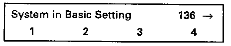
Display will appear as shown (1 to 4 = display fields)
- Increase engine speed between 2500 and 3500 RPM, check specifications after 120 seconds.


- Press -C- button.
Work step: 11
Diagnostic test: Fuel tank vent system (EVAP canister purge regulator valve)
- Vehicle stationary
- All electrical consumers switched OFF (coolant fan not running during check)
- A/C switched OFF
NOTE:
Engine must not be under load during the diagnostic test or sequence will be interrupted and not started again until engine is revved up.
Display will appear as shown
- Press -1-, -5- and -0- buttons to input display group 150.
- Press -Q- button to enter input.
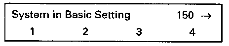
Display will appear as shown (1 to 4 = display fields)
- Run engine for 30 seconds at idle and check specifications.
NOTE:
For work step 11, look for either display field 2 or display field 3 specification fulfillment, but not both. Fulfillment of either display is acceptable.
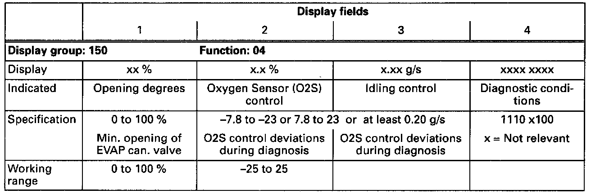
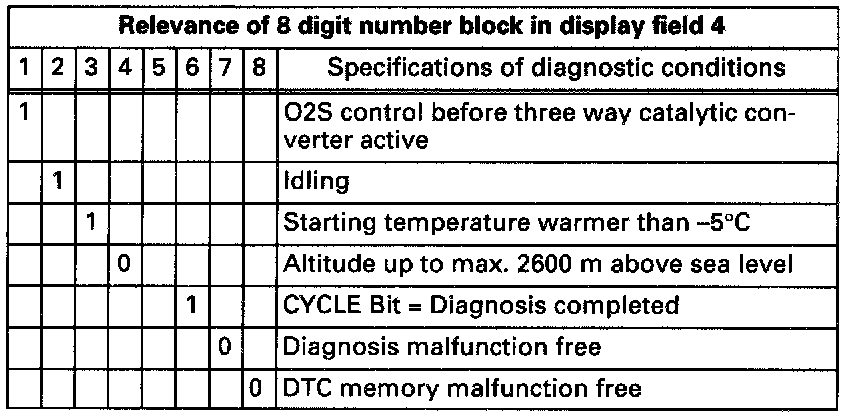
- Press -> button.
Work step: 12
- Read readiness code. With Manufacturer's Scan Tool
If readiness code NOT OK:
- Perform optional work steps 13 through 19.
Work step: 13
Diagnostic test: Vehicle Speed Sensor (VSS)
Display will appear as shown
- Press -0- and -4- buttons to select "Basic setting" function 04. Press -Q- button to enter input.
Display will appear as shown
- Press -1-, -8- and -0- buttons to select display group number 180. Press -Q- button to enter input.
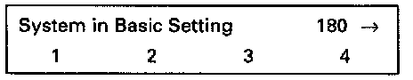
Display will appear as shown: (1 to 4 = display zones)
- Perform test drive and fulfill the following conditions:
- Transmission Range 2 or 3nd gear selected
- Engine speed between 3500 RPM for 5 seconds
- Then release accelerator pedal for 3 seconds.
- After3 seconds, vehicle speed must be 20 km/h (13mph) min. and have been in overrun for 2 seconds minimum.
- Check specs. during test drive (second technician necessary).
WARNING:
When driving or riding in an airbag-equipped vehicle:
- Never hold test equipment in your hands or lap while the vehicle is in motion. Objects between you and the airbag can increase the risk of injury in an accident.
- Secure tools or test equipment on passenger side floor where it can be safely read by the second technician.
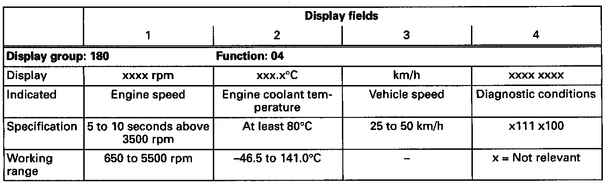
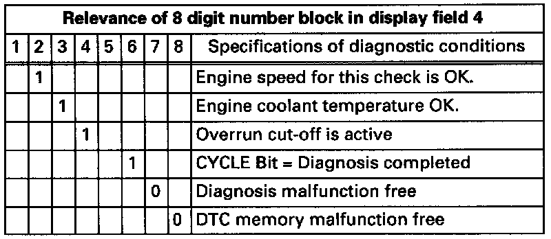
- Press -C- button.
Work step: 14
Diagnostic test: Knock Sensors (KS)
Test conditions
- Vehicle stationary
Display will appear as shown
- Press -1-, -4- and -5- buttons to input display group 145.
- Press -Q- button to enter input.
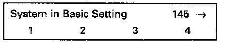
Display will appear as shown (1 to 4 = display fields)
- Increase engine speed to 3200 RPM minimum and check specifications after 15 seconds.


- Press -3- button (VAG 1551) or up arrow (VAG 1552).

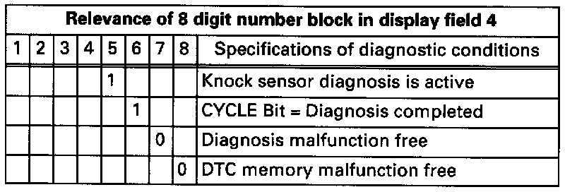
- Press -C- button.
Work step: 15
Diagnostic test: Heated Oxygen Sensor (HO2S) before three way catalytic converter
Display will appear as shown
- Press -1-, -1- and -5- buttons to input display group 115.
- Press -Q- button to enter input.
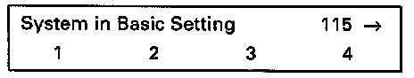
Display will appear as shown (1 to 4 = display fields)
- Increase engine speed between 2200 and 2800 RPM and check specifications.
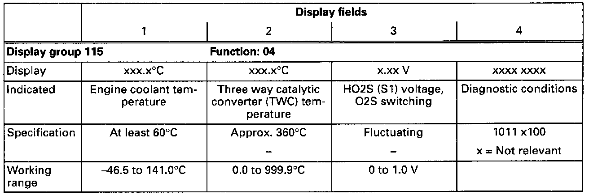
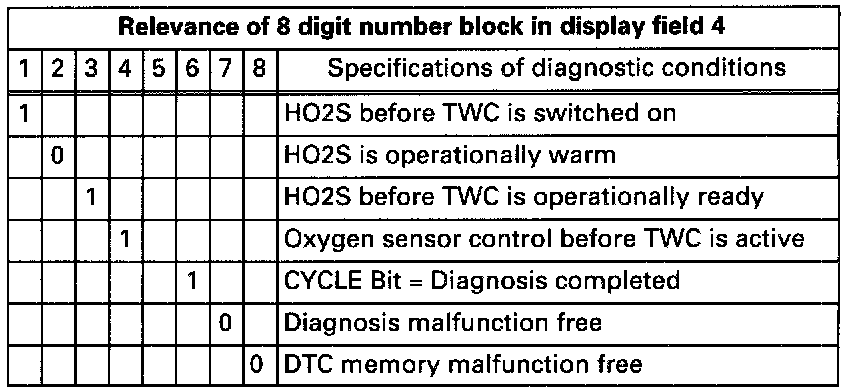
- Press -3- button (VAG 1551) or up arrow (VAG 1552).
Work step: 16
Diagnostic test: Heated Oxygen Sensor (HO2S) after three way catalytic converter

Display will appear as shown (1-4 = display fields)
- Increase engine speed between 2200 and 2800 RPM and check specifications after 15 seconds.
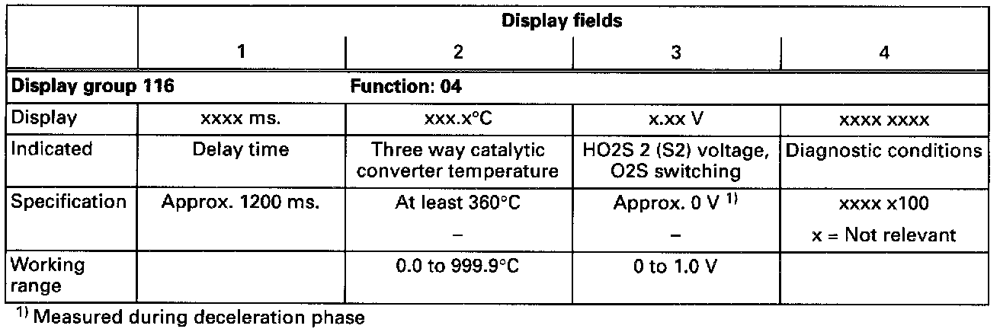
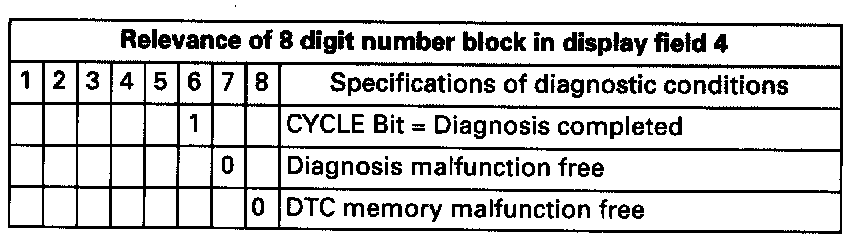
- Press -C- button.
Work step: 17
Diagnostic test: Oxygen Sensor (O2S) heating (before three way catalytic converter)

Display will appear as shown
- Press buttons -1-, -2- and -0- to input display group 120.
- Press -Q- button to enter input.

Display will appear as shown (1-4 = display fields)
- Increase engine speed between 2200 and 2800 RPM and check specifications.


- Press -3- button (VAG 1551 scan tool) or up arrow button (VAG 1552)

Display will appear as shown (1-4 = display fields)
- Increase engine speed between 2200 and 2800 RPM and check specifications.

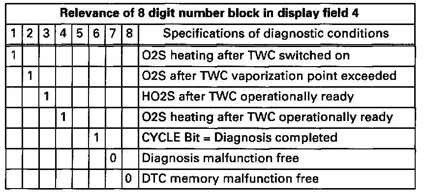
- Press -C- button.
Work step: 18
Diagnostic: Throttle valve control module
NOTE:
There are no specifications for this diagnostic test. The values in display fields are typical. Obtaining other values does not indicate a system malfunction. The diagnostic functions run in the background during the check
Display will appear as shown
- Press -0- and -8- buttons to select "Read measuring value block" function 08.
- Press -Q- button to enter input.
Display will appear as shown
- Press -1-, -4- and -0- buttons to input display group 140.
- Press -Q- button to enter input.
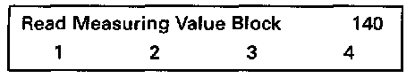
Display will appear as shown (1 to 4 = display fields)
- Run engine at idle.
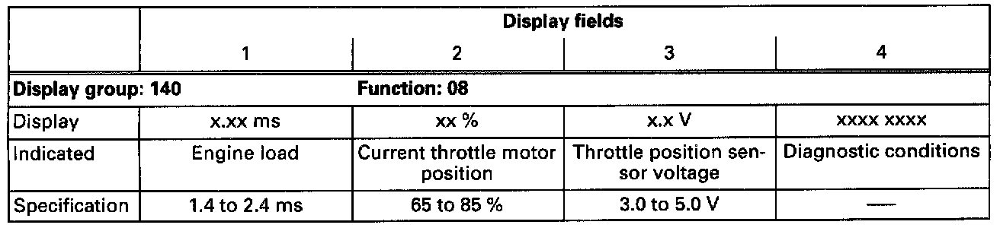
- Press -3- button (VAG 1551 scan tool) or up arrow button (VAG 1552).

Display will appear as shown (1-4 = display fields)
- Run engine at idle.
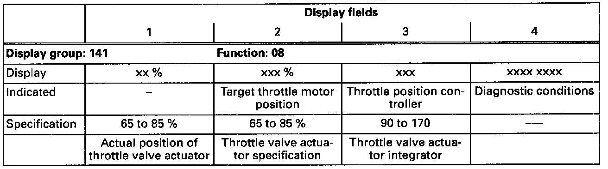
- Press -3- button (VAG 1551 scan tool) or up arrow button (VAG 1552).
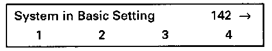
Display will advance as shown (1 to 4 = display fields)
- Run engine at idle.
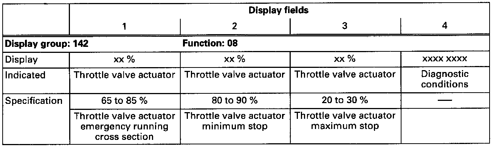
- Press -> button
Work step: 19
- Read readiness code. With Manufacturer's Scan Tool
- Press -0- and -6- buttons to select "End Output" function 06.
- Press -Q- button to enter input.